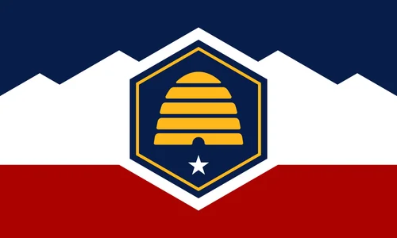

Marinda Keller
About Me
My name is Marinda Keller. I am a student at BYU-Pathway. I am studying Web Development. I am married and have 2 children. I also have a pug named Suca. I enjoy spoiling Suca, reading, sewing, and spending time with my family. I work as a full-time Librarian at the Hunter branch of the County Library in Salt Lake, Utah. There I manage the teen fiction collection and the juvenile non-fiction section. I am responsible for all the teen programming. My favorite programs are the ones I can completely prep for in advance. That way I can watch all the teens enjoy the event. 🐾
Flag of the State of Utah

In the summer of 2026, I ran a program with the support of the Utah Historical Society, where teens got to make a "stained glass" state flag using tissue paper and laminate sheets. The blue stands for the blue skies of Utah, the white for the snow-capped mountains, the red for the canyons in the south of the state. The beehive stands for industry and the star is for statehood. 🐾